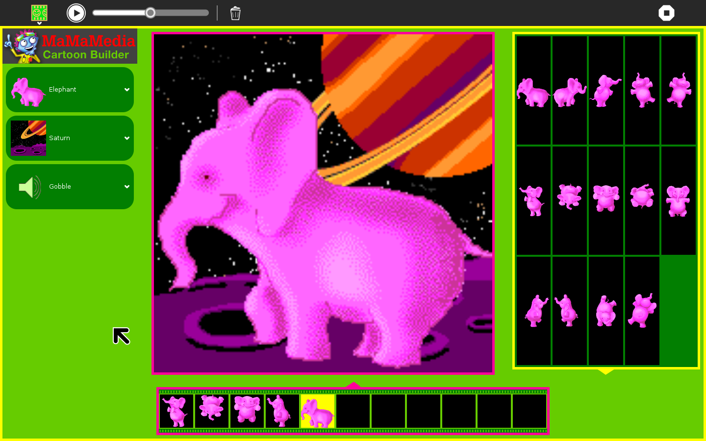

Cartoon Builder¶
Overview¶
Cartoon Builder lets you explore the cartoon-making process called “cell-animation” which uses a sequence of pictures with small differences to create the illusion of movement.
You can create your own cartoon by placing different pictures of a cartoon character inside the squares (“cells”) of a filmstrip, adding different backgrounds and sound effects, and playing the pictures back in order like a little movie. You can save your cartoon on the Sugar, and share it with friends and family.
Cartoon Builder helps you explore how cartoons are created, and learn how to put creative ideas into action.
Creating a story with pictures can also help you to express ideas that you may not yet have words for.
In the process of creating and sharing your cartoons, you will also learn how to use many Sugar activities, including Paint, Camera, and Microphone.
Throughout the school year, the Cartoon Builder can be integrated into different subject areas (example: creative writing, art and drama). You can make Cartoon Builder images that relate to a subject the class is studying, and share them with peers.

Skills:
Practice working with a partner
Learn to translate ideas into artistic images
Learn how to act out stories
Learn to articulate creative ideas to peers
Learn from classmates
Learn how to use specific programs of the Sugar on your Laptop
Learn how to use the Paint Program
Learn to express ideas you are studying through an original project
Learn the sequence or order of a story
Learn about cell animation
Explore Animation with Cartoon Builder¶
Do you like cartoons? Who are some of your favorite cartoon characters?
A cartoon is made from a series of drawing with small differences that, when viewed quickly, seem to move. This movement is called animation. Try the Cartoon Builder to learn more about how animation works.
Open the MaMaMedia Activity Center from the Sugar Home screen.
Open the Cartoon Builder from the MaMaMedia Activity Center.
A space alien will appear in the activity. You can play with this character, or choose a different one using the Character chooser on the right. Click on the arrows to see more characters.
After you choose a character, decide which 6 movements you would like your character to make.
Click on the first box in the filmstrip at the top of the screen, and then click on an image in the pose gallery on the left. The image you chose will appear in the first box. Repeat this process for all six boxes.
Press the Play arrow under the big picture to make your cartoon go.
Explore the backgrounds and sounds on the right of the screen. Click on the arrows to see more backgrounds and hear different sounds.
Save your animation when you are happy with it. Click the “Save” (computer disc) button in the top right corner of the screen. Give it a name you will remember, like “Cartoon1” and click “Save.”
To find “Cartoon1” later, click on the “Open” (folder) button in the top right corner (next to “Save”). Click “Cartoon1” on the list that appears to load your animation in the Cartoon Builder.
Share your cartoons with classmates, and look at the cartoons they made. Talk about making the cartoons. What was hard? What was fun? What did you learn?
Record the ideas your class had using the “Write” activity on your Sugar. If you have poster paper, you can create a set of ‘Cartoon Making tips’ to put up on the wall.
Make a Spinning Thaumatrope¶
Animation is an illusion that happens when you look at two or more pictures and they seem to blend into one moving image.
A thaumatrope is a piece of paper with two pictures, one on each side. If you have access to paper or note cards, tape and a pencil, a thaumatrope is fun and helpful tool for understanding how pictures appear to become animated.
Materials Index card (cut in half) Pencil, crayon or marker to draw with Stick to tape cards on (pencil is OK too) Tape, glue or something to stick paper to the pencil or stick.
Instructions:
Think of the animation that you want to make. For example, a fish in a bowl or a cat in a tree.
Draw one part of the picture on one half of the card (example: fish) and draw the second part of the picture (example: the fish bowl) on the second half.
Tape the pencil or stick to the back of one card and then tape the second card to the pencil so that the drawings are back-to-back.
Spin the thaumatrope by rolling the pencil between your hands. What do you see?
Create “Dancing Pictures”¶
Cartoons are like dancing pictures. When you dance, you move your body through a set of poses. Each pose is a little bit different from the one before it. When you make a cartoon, you draw a set of picture poses where each one is just a little bit different than the one before it. Flipping through all the pictures quickly creates the illusion of movement.
Materials 6 index cards (or one piece of paper cut into 6 pieces) Pencil, crayon or marker
Instructions: Think of a dance (or an exercise or a silly movement) with six poses.
Slowly demonstrate the poses of that dance for your class. Then do the dance faster. (If you prefer, you could ask a volunteer from the class to demonstrate the dance.)
Invite the whole class to get up and try the dance. Remind them to think about each of the poses as they dance.
After a few minutes of dancing, ask everyone sit back down.
Now take out a pencil and six index cards.
Draw a stick figure doing each pose on separate index cards.
Act out each pose to help other students draw.
Put your 6 cards into a stack and either staple it or hold it tightly by the upper left corner.
You can make the cartoon stick figure “dance”, by holding the book on the stapled edge with you left hand and flipping the lower left corner of the stack with your right thumb.
Flipping the images trick your eye! It seems like the stick person dances, but it is an illusion caused by looking at the pictures quickly.
Customize your cartoon flipbooks further by coloring them or adding more poses.
Alternative to dancing: Try acting out the movements of a non-human character, like a frog hopping. Perform these movements for your class and have them guess who your character might be.
Add Your Own Backgrounds to Cartoon Builder¶
Use the Paint or Camera activity on your Sugar to make your own original background images for your cartoon.
Make a background picture with Paint: Open the Paint or Camera activity from the Home screen of your Sugar.
With Paint, draw a scene (place where the character can be) such as a school room or a field or the edge of a river.
With Camera, take a photo of a place, such as school or your house.
Save the picture with a name you will remember like “background1”
Add your background to the Cartoon Builder: From the Home screen of your Sugar, click on the Mama Media icon.
Open the Cartoon Builder activity from the MaMaMedia Activity Center.
Click on the “My Background” button and find your picture called “background1” in the list of files that appears. Click on it and then click the “Open” button.
Your “background1” picture will load into the Cartoon Builder
Choose a character and place it in your background. Add sound and save it.
Show it to your friends and classmates, and tell them how you did it Help others to create their own background pictures.
Draw and Animate Your Own Character¶
You can use Paint to make your own original cartoon character in lots of poses. Then you can use the “My Own” functionality in the Cartoon Builder to import the poses and create original cartoons. Learn the steps by creating a simple cartoon face.
First create four face pictures using Paint on your Sugar:
Open the Paint activity from the Home screen of your Sugar.
Use the Paint tools to draw a face with eyes, nose, ears and hair. Do not draw a mouth yet.
Click “Save Image” button
When the Save window appears, click on the button “New folder” and type “Face” into the folder name field. Click the “Create” button.
A new folder called “Face” will appear in the list of places where you can save your picture. Double click on “Face” to open it.
Save the picture here with the name “Face1” and click OK.
Now draw a frowning mouth on the face and save it as “Face 2”
Erase the frown and draw a straight line mouth. Save it as “Face 3”
Erase the straight line mouth and draw a smile. Save it as “Face 4”
Now put your pictures into the Cartoon Builder and animate the face:
From the Home screen of your Sugar, click on the MaMaMedia icon.
Open the Cartoon Builder from the MaMaMedia Activity Center.
Click the “My Character” button, find the “Face” folder and open it.
The three facial images you created will appear in the poses list on the left side of your screen.
Place them in box 1, 2, and 3 in the slides on top of your screen, and then press Play to see the face animate.
Save this cartoon and share it with your class.
Discuss what you were able to do with your images. Did you learn anything new about animation?
Open the “Write” activity on your Sugar and write down the ideas from your discussion.
NOTE: Drawings you make with Paint only have one layer, so your character will completely cover the backgrounds offered in Cartoon Builder. Try drawing a background around your character in Paint.